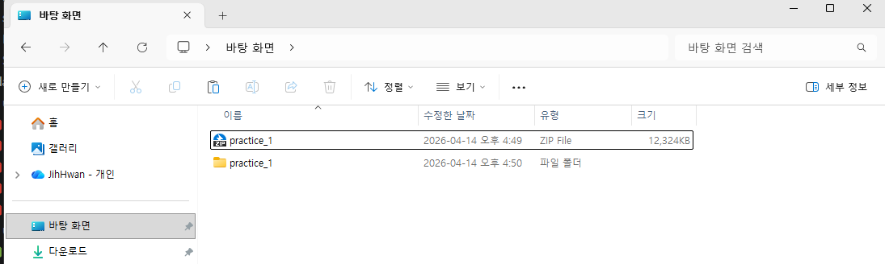
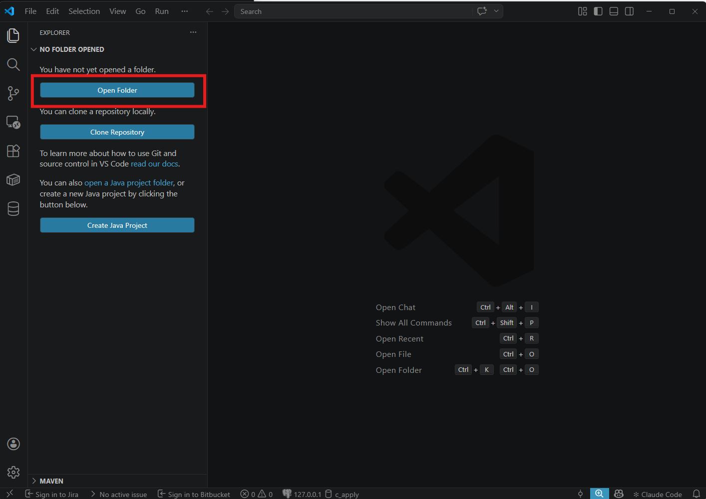
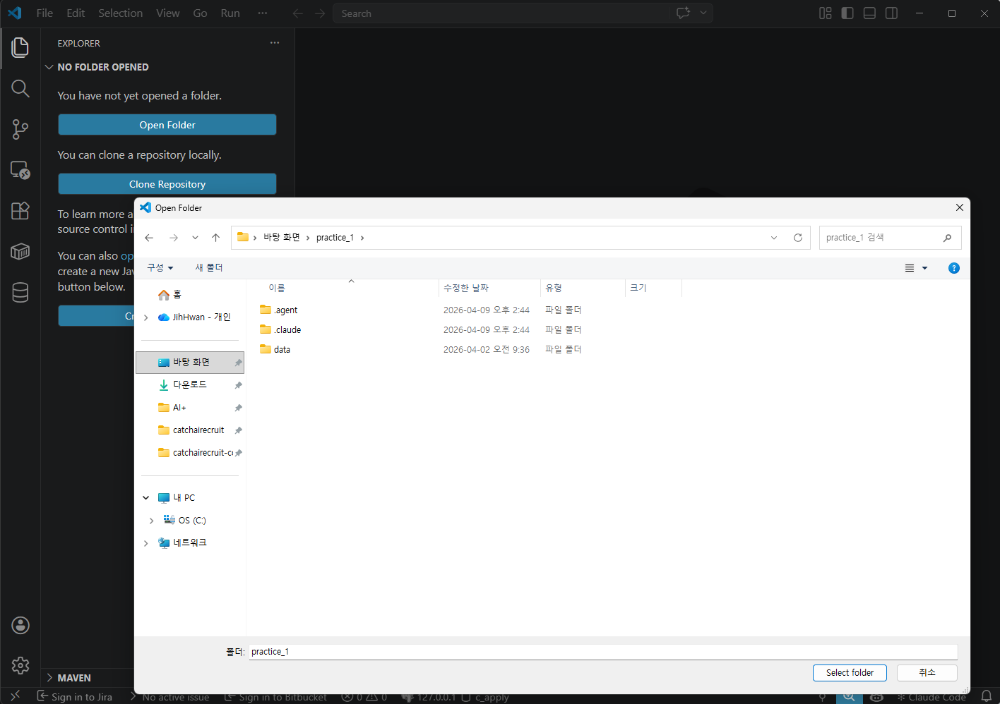
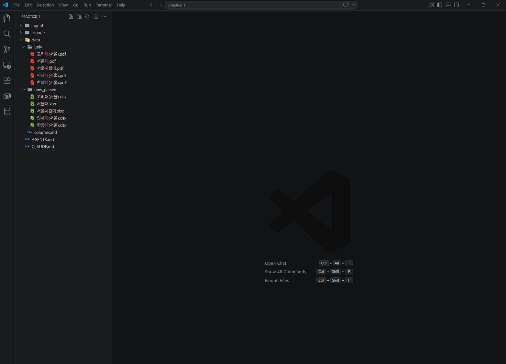
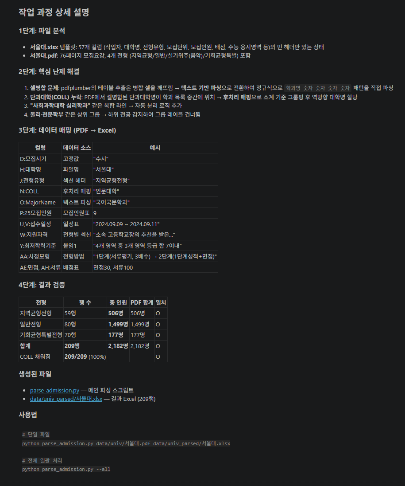
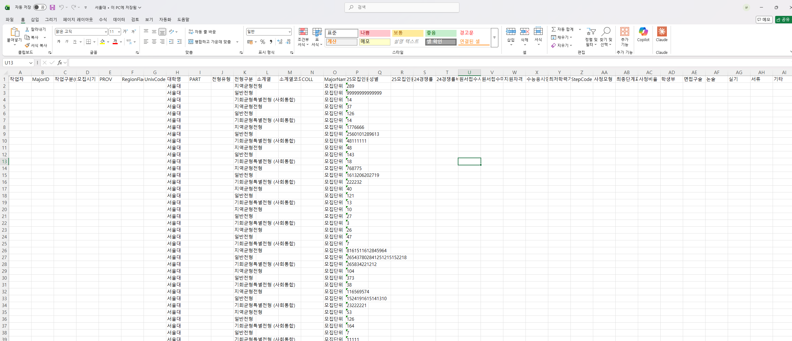

Stage 0. 일단 시켜보기¶
다음 → Stage 1. 디테일 채워주기
요리로 치면 레시피를 다 쓰기 전에 먼저 한 번 만들어보는 단계입니다. 이 단계의 목표는 정답을 맞추는 것이 아니라, AI가 어디서 헷갈리는지 빠르게 파악하는 것입니다.
이번 단계 (약 5분)
- 실습 파일 준비 (압축 해제 → VSCode로 열기)
- 프롬프트 1개만 입력하면 됩니다
- 결과를 보고 "어디가 이상한지" 메모합니다
- 그 메모가 다음 Stage의 재료가 됩니다
🗂️ 먼저 실습 파일 준비하기¶
AI에게 시키기 전에, 실습 자료가 들어있는 폴더를 VSCode로 열어두어야 합니다. Claude Code가 이 폴더 안의 파일(PDF, Excel)을 볼 수 있기 때문입니다.
1️⃣ practice_1.zip 을 바탕화면에서 압축 해제¶
전달받은 practice_1.zip 파일을 바탕화면에 두고 더블클릭해서 압축을 풉니다. 아래처럼 zip 파일 옆에 practice_1 폴더가 새로 생기면 성공입니다.

압축 해제된 폴더 안에는 .agent, .claude, data 폴더가 들어있습니다. data/univ가 모집요강 PDF, data/univ_parsed가 비어있는 Excel 템플릿, data/columns.md가 각 컬럼의 의미·예시를 정리해둔 명세 파일입니다 (AI가 그대로 참조하라고 만든 파일).
2️⃣ VSCode를 열고 Open Folder 클릭¶
VSCode를 실행하면 아래처럼 시작 화면이 뜹니다. 왼쪽의 파란색 Open Folder 버튼을 클릭하세요. (단축키로는 Ctrl + K → Ctrl + O)

3️⃣ 방금 압축 해제한 practice_1 폴더 선택¶
폴더 선택창이 뜨면 바탕화면 → practice_1 을 선택하고, 오른쪽 아래 Select folder 를 누릅니다.

주의 — practice_1 폴더 자체를 선택하세요
실수로 data 폴더나 바탕화면 자체를 선택하지 않도록 주의하세요. 반드시 .agent, .claude, data가 안에 보이는 practice_1 폴더를 선택해야 합니다.
4️⃣ 프로젝트가 열리면 Claude Code 패널 확인¶
VSCode 왼쪽 탐색기(EXPLORER)에 data/univ(PDF 5개)와 data/univ_parsed(Excel 5개)가 보이고, 오른쪽에는 Claude Code 패널이 있으면 준비 완료입니다. 여기서 이제 프롬프트를 입력하면 됩니다.

Claude Code 패널이 안 보이면
단축키 Ctrl + Alt + I 를 누르거나, 우측 상단에서 Claude Code 탭을 열면 됩니다.
🚦 AI에게 시키기 전에 — 자동 허가 모드 설정
에이전트가 매번 "이 파일 수정해도 될까요?"라고 물으면 실습 흐름이 끊깁니다. 실습 시작 전에 자동 허가 모드로 바꿔두세요.
👉 자동 허가 모드 설정 가이드 열기 (Claude Code / Antigravity / Codex)
딱 한 번만 시켜보기¶
PDF 파일과 빈 Excel 템플릿을 준비한 뒤, 아래 프롬프트를 그대로 복사해서 AI에게 보내세요.
AI에게 이렇게 말해보세요 — 일단 시켜보기
@data/univ/서울대.pdf 이 파일은 모집요강 파일이야.
이 파일을 보고 @data/univ_parsed/서울대.xlsx 의 컬럼들에
값을 찾아서 넣어줘야해. @data/columns.md 에 각 컬럼이 무엇이고
어떤 값이 들어가는지 정리해뒀으니 이걸 기준으로 채워줘.
- 컬럼 구성을 자세히 읽고 PDF에서 해당 정보를 찾아서 깔끔하게 채워줘.
- 다른 대학 PDF에도 쓸 자동화 프로세스를 만들 거니까
이 파일에만 특정하게 동작하도록 만들면 안 돼.
- 표가 다음 페이지까지 이어지는 경우가 있으니
반드시 최소 1페이지 뒤까지 확인해줘.
- 셀 병합 때문에 깨지는 경우도 있으니 눈으로 직접 비교도 해줘.
- 끝나면 과정을 자세히 설명해줘.
이런 결과가 나오면 정상입니다¶
아래는 Stage 0에서 흔히 보게 되는 실제 화면입니다. 지금 시점에서는 틀린 부분이 있어도 괜찮습니다. 그게 Stage 1에서 쓸 재료예요.

위 화면에서 주목할 점
- AI가 스스로 PDF를 여러 페이지 훑으면서 표를 찾고 있습니다
- "이 컬럼은 이렇게 채웠다"라는 설명을 같이 보여줍니다
- 일부 칸은 비어 있거나 값이 이상할 수 있습니다 — 그게 정상입니다

결과 Excel을 볼 때 메모할 것
- ⭕ 잘 채워진 컬럼은? (예: 대학명, MajorName)
- ❌ 비어 있거나 어긋난 컬럼은? (예: 전형유형·전형구분이 뒤바뀜)
- 📄 행 수가 예상의 절반 정도라면 → 구조가 통째로 빠졌을 가능성
이 메모가 Stage 1에서 AI에게 전달할 "관찰담" 의 원본입니다.
혹시 이런 상황이면 (접혀 있음 — 필요할 때만 열어보세요)
에러가 나서 Excel이 아예 안 만들어짐 → 에러 메시지를 그대로 복사해서 "이런 에러가 났어. 원인이 뭐야?"라고 보내면 됩니다.
Excel에 행이 5줄밖에 없음 → "이 PDF는 수십 페이지야. 전체 페이지를 다 읽어서 다시 해줘."
컬럼이 전부 비어 있음 (이미지형 PDF) → "텍스트가 하나도 안 뽑혔어. 이미지형인지 확인하고 OCR 경로를 알려줘."
체크포인트¶
- 프롬프트 1개를 AI에게 보냈습니다
- 결과 Excel에서 ⭕와 ❌를 메모했습니다
- 다음 Stage에서 보완할 포인트가 손에 잡힙니다
다음 → Stage 1. 디테일 채워주기